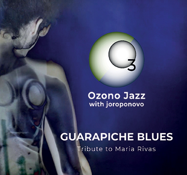

~ Música Ecológica de Venezuela ~
COMPOSICIONES | DESARROLLO MUSICAL & CONCEPTOS
La música de Ozono está publicada en discos compactos, así como en las plataformas musicales en línea a través de:
YouTube (Audio) | distrokid.com (Audio)
(Spotify, Apple Music, iTunes, TikTok/Resso, Google Play/YouTubeMusic, Amazon, Pandora, Deezer, Tidal,
Napster, iHeartRadio, ClaroMusica, Saavn, Anghami, KKBox, NetEase (beta), MediaNet, Instagram/Facebook)
CD's:


• Audio vía distrokid.com – clic en la portada OZONOJAZZ EN VIVO (2021) Octeto • INFO CD • Audio vía YouTube – clic en su nombre GUARAPICHE BLUES (2020) Cuarteto • INFO CD • Información sobre cada CD - clic en INFO CD LABERINTO (2017) Dúo • INFO CD • En físico - Mercadolibre o mandar un correo
NATURA (2009, 2012) Sexteto • INFO CD
OzonoJazz EN VIVO - Hotel Humboldt, Caracas (2021)

CD en físico: Mercadolibrexxxxxxxx
Emilio Mendoza Guitarra 6 nylon, composición
Juan Lizardo Guitarra 12 metal
ChurroGreen Bajo
Marcy Durán Voz, percusión
Francisco Issá Saxofones, percusión
Ómer Pérez Batería
Lizardo Domínguez Maracas, percusión, aerófonos étnicos
Álvaro Pardey Percusión, aerófonos étnicos, didgeridoo
Tocar música original con una excelente agrupación es una proeza considerable, así como una experiencia exquisita de habilidades, memoria y concentración. Pero ejecutar un concierto completo que se va a grabar en video para televisión, de arriba a abajo sin poder parar ni repetir las piezas, a ser visto después por miles de personas, se convierte en una ocasión muy especial y es un reto significante para un grupo musical.
Escogimos tocar en el lugar más alto de Caracas, la Capital en el centro de Venezuela, bordeando el filo de una gran montaña entre el mar y la ciudad. Hicimos el concierto en el Hotel Humboldt, una edificación única y preciosa de arquitectura refinada al estilo de los años cincuenta, con una vista simplemente extraordinaria… Fueron unos momentos maravillosos al crear música en conjunto, un paseo encantador en el Cerro Ávila, conocido ancestralmente como Waraira Repano.
La banda Ozono tocó esplendorosamente, con emoción y entrega creativa que resalta en cada pieza, en los solos, en los adornos y sobretodo en las combinaciones instrumentales, con una interacción polifónica surgida sin previo arreglo, absolutamente espontánea. Fue un momento grupal insuperable, mágico y fascinante, con la danza de Nathalia Molina, Chehrazad Mourad en las ventas de camisetas y CDs, y el pintor Hernán Soto con el video en vivo. Culminamos todos en celebración comiéndonos unas divinas cachapas con queso en Galipán y nos acompañó el atardecer del valle bajando por teleférico, de vuelta a la ciudad brotada de luces como un mar lleno de estrellas. ¡Qué buen concierto!
Realizar una grabación de todo un concierto en vivo conlleva para un ingeniero de sonido la misma concentración y entrega de cualquier músico de la banda, por ser una actividad en tiempo real, sin posibilidad de parar, repetir, editar o realizar tomas adicionales. Haber contado con Chris Amalvy para tal hazaña garantizó el alto nivel musical y artístico de la producción final ya que él se especializa en este género de la tecnología y arte sonoro, donde el sonidista es un ejecutante más del grupo en vivo, y quizás uno de los más importantes miembros.
Los videos de las piezas que acompañan a este disco (ver https://ozonojazz.com/ozono/videos_septeto.html), fueron escogidos por sus dos extremos: Terruño representando a nuestra Tierra, nuestro hogar, con el Roraima y sus 200 millones de años, el macizo más antiguo del planeta, por un lado, y Silencio de Luz indicando el extremo del gran, inmenso universo vacío y oscuro, lleno de pelotas dando vueltas, donde este terruño azulito y blanco, lleno de vida se encuentra. El video de Silencio de Luz incluye el brote de la vida en el espacio, que nos hace completamente diferrente, tipificado con semillas nacientes de bellas flores.
01. Sol de Mañana 4:51
02. Silencio de Luz 5:54
03. Sentir del Viento 3:41
04. Espirales 3:43
05. Terruño 3:45
06. Danzas de Vida 5:45
07. Resplandor 5:57
08. Evolución 5:44
Bonus Tracks:
(Música de los videos de Wladimir Rancho Pérez con Ozono en vivo en el Teatro Emma Soler, Los Teques)
09. Encanto 4:34
10. Canción de Cuna 4:40
Estudios de Grabación
Christophe Amalvy, Caracas
Jesús Enrique Torres, Estudios Edén, San AntonioGrabación en vivo,
edición y mezcla Christophe Amalvy, Caracas
Edición y Mastering Jesús Enrique Torres, Estudios Edén, San Antonio
Diseño Gráfico Mónica Ambrosio Durán
Arreglos Ozono Jazz
Dirección & Producción Emilio Mendoza & León Zapata por ViveTV
- León Zapata y a su equipo audiovisual, por la iniciativa, dirección y producción con Vive TV, para realizar este concierto-programa de televisión con Ozono en el Hotel Humboldt.
- Chris Amalvy por su logro de capturar en la grabación a tiempo real, la magia del performance en conjunto.
© 2021 Copyright por Emilio Mendoza Guardia - All Rights Reserved - Todos los Derechos Reservados.
p 2021 Producciones ArteMus, C.A., San Antonio de los Altos, Venezuela. Depósito Legal Nº MI2021000654
GUARAPICHE BLUES - Homenaje a María Rivas (2020)


CD en físico: Mercadolibre
Emilio Mendoza Guitarra (6 nylon), Composición
Juan Lizardo Guitarra (12 metal)
Churrogreen Bajo, Sitar
Lizardo Domínguez Maracas, Percusión, Armónica
El disco está en versión de cuarteto, con excepción del track Guarapiche Blues que es con la voz de María Rivas y la banda completa. Está dedicado a María Rivas por su mérito en ser la primera cantante de Venezuela que despertó la consciencia ecológica en sus conciertos. Fue designada "Madrina de Inparques" en 1992 y recibió el Premio Phelps de Ecología en 1993. Además de una bella voz, María fue una gran persona, amiga de muchos años y mi vecina. ¡Bravo María!, precursora y gran ejemplo para todos nosotros.
Celebramos nuestro 15º aniversario de sostenida actividad con una muestra de piezas emocionalmente intensas y de contraste, en reflejo de nuestra existencia en un país afectado por una crisis crónica, donde realizar un disco es sumamente difícil. Esta vez, resaltamos la pureza de las emociones humanas en contraste con la sociedad de desechos, basura y ruido que hemos derramado a nuestro alrededor en la única Tierra disponible.
01. Esperanzas-2015 09. Aguaclara
02. Canción de Cuna 10. Terruño
04. Silencio I 12. Resplandor
05. Desamores 13. Añoranza (en la Playa)
06. Laberinto 14. Guarapiche Blues
07. Sol de Mañana 15. Silencio II
08. Encanto 16. Silencio III
Músicos Invitados
En Guarapiche Blues:
María Rivas Voz
Valentina Becerra Coros
Marcy Durán Coros
Piia Mejía Coros
Rocío Portal Coros
Francisco Issa Saxos
Ómer Pérez Batería
Dha Maharaj Tablã de la India en Laberinto y Evolución
Estudios de Grabación
Mezcla y Mastering Jesús Enrique Torres, Estudios Edén
Diseño Gráfico Mónica Ambrosio Durán
Arreglos Emilio Mendoza
Producción Asociada Jesús Enrique Torres
Dirección & Producción Emilio Mendoza
Agradecimientos
© 2020 Copyright por Emilio Mendoza Guardia - All Rights Reserved - Todos los Derechos Reservados.
p 2020 Producciones ArteMus, C.A., San Antonio de los Altos, Venezuela. Depósito Legal Nº MI2018000942
03.
Espirales
08. Aguaclara
04. Desamores
09. Terruño
05. Laberinto
10. Resplandor
Se agradece especialmente el gentil auspicio de la Gobernación del Estado Miranda, Dirección de Cultura,© 2017 Copyright por Emilio Mendoza Guardia All Rights Reserved
Directora Marisela Valero, de la Embajada de la India en Caracas y de Francisco Angarita y Nelson Jiménez por el servicio de transporte.
03.
Silencio de Luz
08. Evolución
04. Sentir del
Viento
09. Danzas de Vida
05. Aguaclara
10. Siempre
Emilio Mendoza Guitarra nylon 6, guitarra eléctrica, aplausosInvitados especiales
Humberto Ike Lizardo Guitarra metal 6 y 12
Marcy Durán Voz
Pablo Gil Saxo en 07, 10
Francisco Issa Saxos 01, 03, 05, 06, 09
Humberto Ike Lizardo Bajo eléctrico
Jesús Eduardo Milano Contrabajo
Lerryns Hernández Batería
Dha Maharaj Tablã
Francisco Díaz Teclados en 03 y aplausos en 02Grabación, pre-edición y pre-mezcla
Juan Lizardo Guitarra 12 en 01 y 04
Rancho Wladimir Pérez Solo de bajo eléctrico en 10
Víctor Escalona, Lerryns Hernández, Jesús Eduardo Milano, Estudios LunaCreciente, Caracas
Francisco Díaz, Estudios Sonofolk, CaracasMasterización Francisco Díaz, Estudios Sonofolk, Caracas


• Inspiradas
En Soundcloud también se pueden escuchar diez piezas en formato de bocetos de grabación casera, realizadas en una sola toma durante varios años, en el momento inspirado en que aparecieron de la nada, sin previo ensayo o sin jamás haberlas ejecutado anteriormente. No han sido trabajadas ni desarrolladas, son simplemente inspiraciones del momento que salieron solitas, de una sola vez hasta su final, espontáneamente.


{kind=link}